The idea
One whisker, two senses:
it feels obstacles and follows the wind.
A thin nitinol rod on two small four-bar linkages reports where it was touched and which way the wind blows, using only four strain gauges.
A mechanics model, corrected by a small neural network, turns the four readings into the 3-D position of a touch along the shaft. With a 30 × 30 mm fin on its tip, the same hardware reads the wind's direction and speed. Three identical whiskers let a wheeled robot drive to a hand-held fan and feel its way around obstacles.
01 / Why two senses
Touch and Feel
in one whisker.
What does a rat do with its whiskers that a robot in the dark might want to do?
A rat's whiskers feel obstacles and also sense airflow, so the animal can find its way by touch and turn toward the source of a breeze. It even divides the work: the whiskers above its eyes act as wind sensors, while those on its snout mainly explore by touch. A mobile robot working where cameras see poorly could use the same two senses.
Most artificial whiskers do only one of the two. Contact whiskers often report only that a touch happened, and struggle to locate it when it is not at the tip. Those that sense both touch and flow tend to rely on several embedded sensors or a vision system. This sensor locates touches and reads airflow with four strain gauges, no camera, and processing light enough for a small microcontroller.
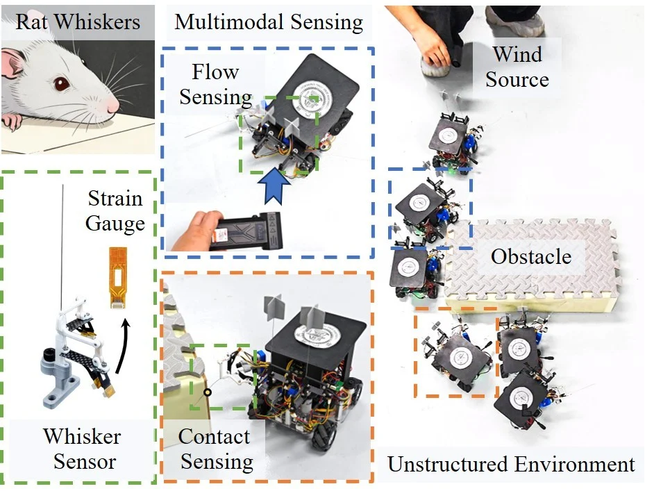
02 / Sensor design
Inside
the whisker.
How does a hair-thin rod report a touch?
The whisker shaft is a nitinol rod 0.6 mm in diameter and 80 mm long. Its sensing elements sit at the base, like the follicle of a biological whisker: two small four-bar linkages, connected in series and set in perpendicular planes. Baffle plates keep each linkage moving in its own plane, so a bend in any direction is split into two planar motions.
One link of each linkage is a carbon-fiber beam 0.2 mm thick and 36 mm long, carrying two full-bridge strain gauges made on a flexible circuit board. A push on the shaft moves the linkages and bends the beams, and the four readings change in a pattern that depends on the direction of the push. The other links and the base are 3D-printed in PLA. A 24-bit converter and a small wireless microcontroller board sample all four gauges at over 100 Hz, powered by a single 3.7 V battery.
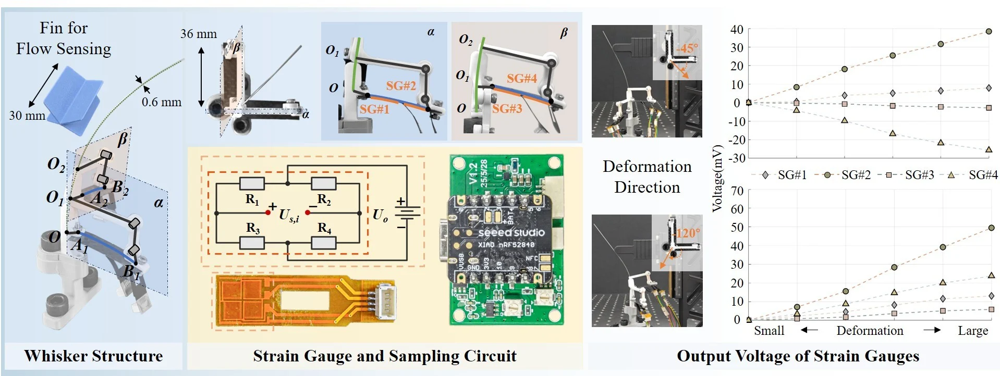
Under the same contact, the readings varied by less than 2 mV. Bent in different directions, the four gauges respond in distinct patterns; a model then maps the readings to the contact.
See the graphical abstract
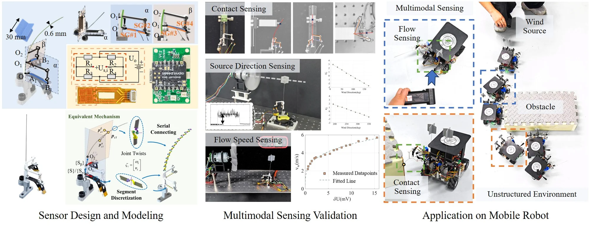
03 / Contact sensing
Physics first,
learning second.
Why pair a mechanics model with a neural network?
The authors model the whisker as an elastic rod divided into many short segments joined by elastic joints. Solved in each of the two planes, the model predicts how the shaft and beams bend for a touch at a given point. Run in reverse, it turns four strain readings into a contact point: an angle φc around the whisker's axis, a distance rc from that axis and a height zc along it.
The real whisker has assembly clearances, printing inaccuracies and internal friction, which are hard to model fully. So a small neural network learns what the model gets wrong: it takes the model's estimate and the four readings, and outputs a correction. It was trained on 720 contact points, made by a UR5 arm and measured by motion capture, and tested on 75 random points it had never seen.
Read
Four strain gauges report how the two beams bend
Model
The mechanics model works back to a first estimate of the contact point
Correct
A neural network adds the residual the model leaves

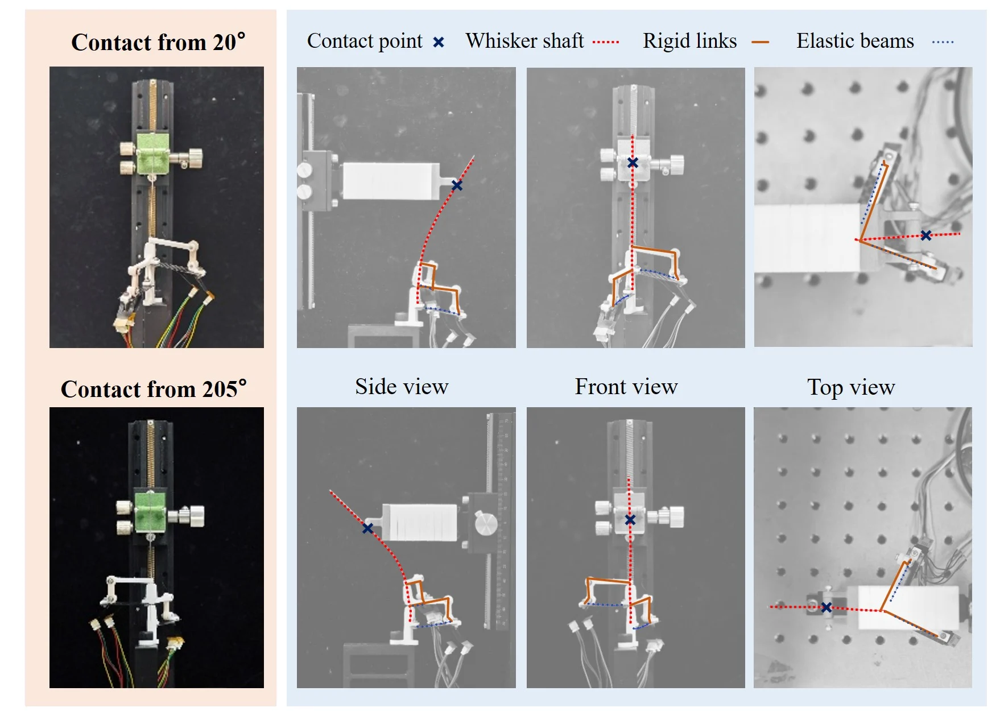

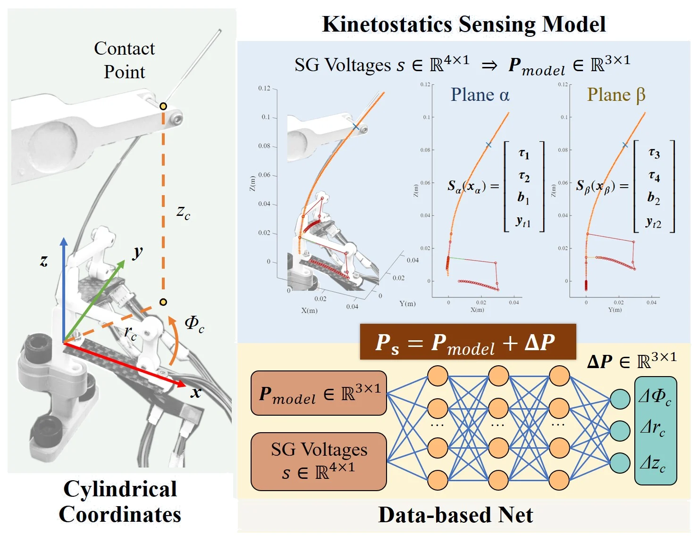
| Mean error | Physics only | Data-driven only | Hybrid |
|---|---|---|---|
| Within the training range · 75 test points | |||
| Angle φc (rad) | 0.09 | 0.08 | 0.06 |
| Radius rc (mm) | 4.74 | 3.61 | 2.94 |
| Height zc (mm) | 8.59 | 7.40 | 5.95 |
| Slightly beyond it · 30 test points | |||
| Angle φc (rad) | 0.08 | 0.14 | 0.08 |
| Radius rc (mm) | 4.88 | 5.58 | 3.30 |
| Height zc (mm) | 8.36 | 10.38 | 7.35 |
Within the training range, the hybrid model cut the error by about 30% compared with the physics model alone, and about 20% compared with the network alone. Slightly beyond the range, the network on its own lost the most accuracy, while the physics model stayed steady: the mechanics is what lets the hybrid carry over to contacts it was not trained on.
See the data-collection setup
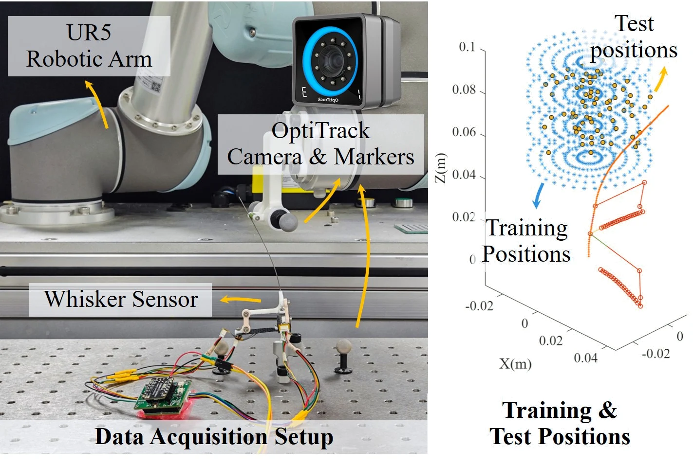
04 / Airflow sensing
Reading
the wind.
Can it tell where the wind comes from, and how fast?
The bare shaft is too slender for wind alone to bend it much, so for airflow sensing a 30 × 30 mm fin is fitted at its tip. Treating the wind's push as a single force at the center of the fin lets the same mechanics model predict how the gauges respond to wind from any direction.
The signs of the two beams' signals tell which quarter the wind comes from, and the ratio between them gives the angle. Once the whisker faces the wind, the size of the signal gives the speed, through a power law calibrated against an anemometer.

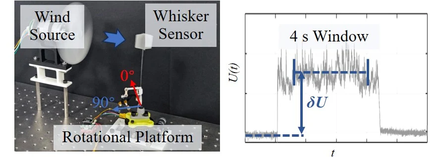
A rotational platform turned the whisker to face a propeller 175 mm away from different directions. After fitting the response at 18 directions, the authors tested 16 new ones at three propeller speeds each. Across these 48 tests, the identified direction was off by 5.41° on average.

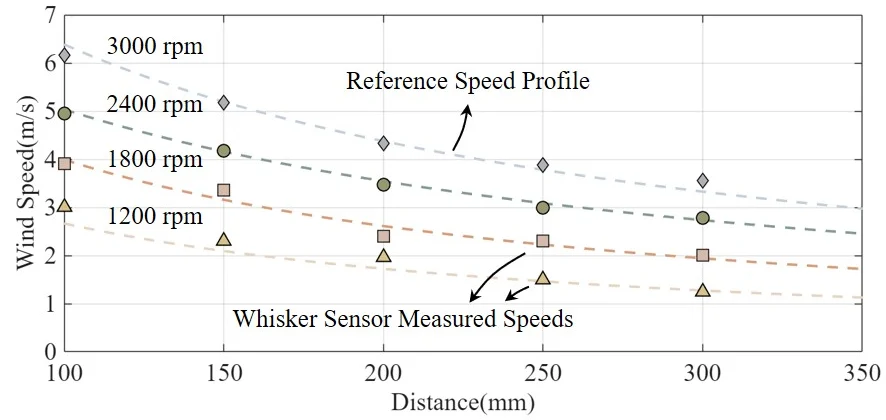
Calibrated against an anemometer at 17 propeller speeds, the wind speed follows a power law of the voltage change (R² = 0.98). Placed 100 to 300 mm from the propeller at four speeds, the whisker followed the anemometer's speed profiles, with a mean error of 0.12 m/s over winds of about 1.2 to 6.2 m/s.
05 / On a mobile robot
Follow the wind,
feel the way.
What can a robot do with three identical whiskers?
A four-wheeled robot carries three copies of the same whisker and, like a rat, splits the work between them: the two on top, fitted with fins, sense airflow, and the one at the side senses contact. Two sampling boards pass the readings to an Arduino Mega 2560, which runs the fitted model and network on board. For contact, sampling takes about 10 ms, locating the touch 11 ms and driving the wheels 8 ms, for an update rate above 30 Hz. A single 12 V battery powers everything, so the robot needs no cables.
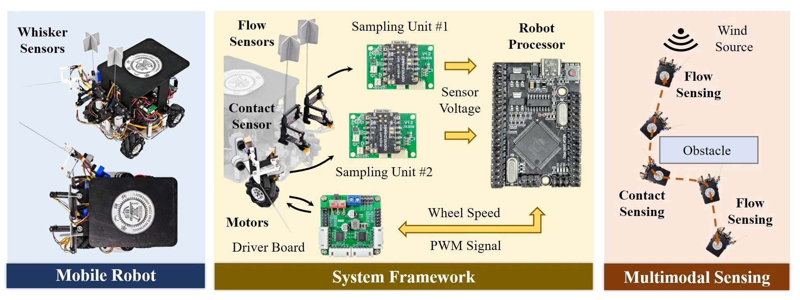
Moving toward a wind source is called anemotaxis. To test it, the robot starts still while a person aims a hand-held fan at it. Each flow whisker estimates the fan's direction; the robot combines the two, turns in place and drives toward the fan. Over four random fan directions with three runs each, its approach direction was off by 3.83° on average.
To feel its way, the robot keeps obstacles on its right and reads where its side whisker is touched. A contact ahead makes it turn left; a contact on the right keeps it at a steady distance; no contact makes it turn right, back toward the obstacle. It got past obstacles in four layouts (a cylinder, a rectangular block and two combinations) three times each, with no failures: about 20 s for a single obstacle and about 30 s for a combined one.

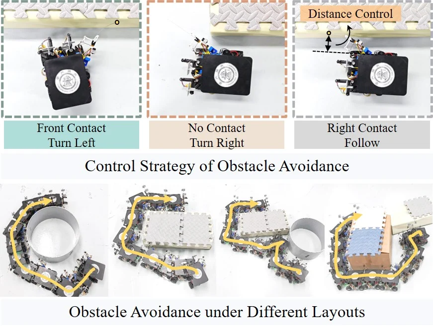
Using both senses together, the robot reaches a fan behind a wall that lets the airflow through but blocks its path. It heads for the fan until the side whisker meets the wall, follows the wall around, then finds the fan's direction again and drives to it.
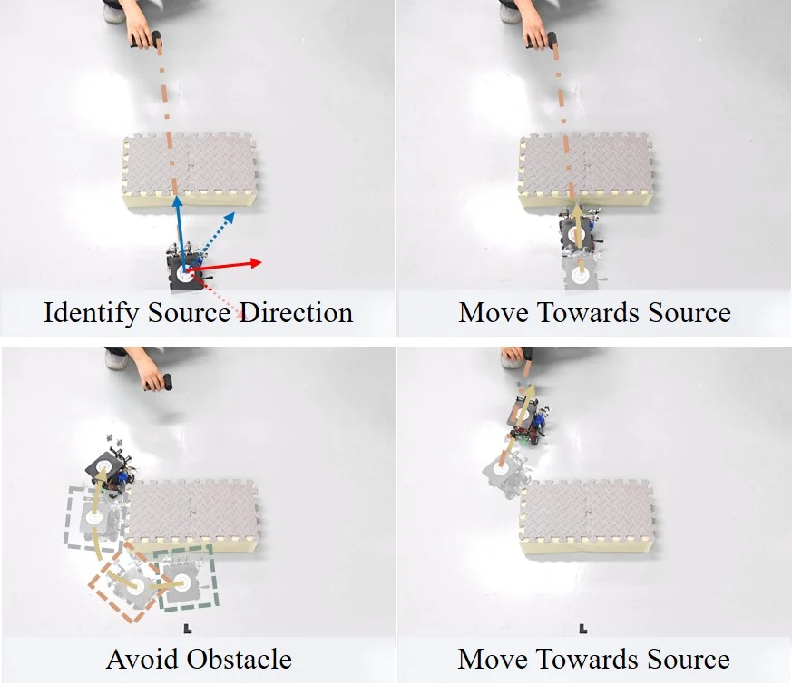
See the anemotaxis trials
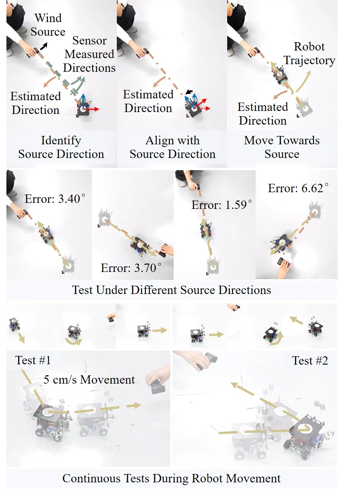
Questions & answers
Common questions.
Why does it need a fin?
The bare shaft is too slender for airflow alone to bend it enough. The fin's 900 mm² is well over ten times the shaft's projected area of about 48 mm², so the wind's push can be treated as one force at the fin's center. Its size is capped at about 40 mm across, to keep clear of neighboring whiskers.
Why not a neural network alone?
Within the training range, a network on its own does almost as well as the hybrid. Slightly beyond that range, its height error grows to 10.38 mm, against 7.35 mm for the hybrid, while the physics model alone stays steady. The mechanics model gives the network a physically sound starting point, which is what lets the hybrid generalize.
Does one whisker sense touch and wind at the same time?
Not in the robot demonstrations. There, each whisker has one job, as on a rat: the two on top read the wind and the one at the side feels contact. The authors ran preliminary tests with contact and airflow together, and list combined sensing as future work.
What are its limits?
Contact sensing assumes a single, frictionless point of contact on a slender shaft; several contacts at once or large forces along the shaft would weaken the link between the four readings and one contact point. The height along the shaft is the least accurate coordinate, because the moments at the base change little with contact height. Airflow was tested with one steady source; turbulent flow or several sources may degrade the estimates.
Paper & authors
Touch and airflow
from four strain gauges.
A Biomimetic Multimodal Whisker Sensor for Both Contact and Airflow Sensing of Mobile Robots
Junjie Luo, Siyue Yao, Tianyi Yan, Tao Yu, Hao Li, Xuyang Duan, Hao Wang, Mark R. Cutkosky, and Genliang Chen.
Sensors and Actuators A: Physical, volume 411, article 118463, 2026. Received 27 May 2026; revised 13 August 2026; accepted 28 August 2026.
Citation / BibTeX
@article{luo2026multimodal,
title = {A Biomimetic Multimodal Whisker Sensor for Both Contact and Airflow Sensing of Mobile Robots},
author = {Luo, Junjie and Yao, Siyue and Yan, Tianyi and Yu, Tao and Li, Hao and Duan, Xuyang and Wang, Hao and Cutkosky, Mark R. and Chen, Genliang},
journal = {Sensors and Actuators A: Physical},
volume = {411},
pages = {118463},
year = {2026},
publisher = {Elsevier BV},
doi = {10.1016/j.sna.2026.118463}
}Full affiliations
- Meta Robotics Institute, Shanghai Jiao Tong University, Shanghai, China
- Shanghai Key Laboratory of Digital Manufacture for Thin-Walled Structure, Shanghai Jiao Tong University, Shanghai, China
- State Key Laboratory of Mechanical System and Vibration, Shanghai Jiao Tong University, Shanghai, China
- Shanghai Key Laboratory of Intelligent Robotics, Shanghai Jiao Tong University, Shanghai, China
- Department of Mechanical Engineering, Stanford University, Stanford, USA
* Corresponding author: Genliang Chen
Supplementary videos
Watch both videos.
The first video shows the robot finding a hand-held fan by its airflow, alone and then from four directions. The second shows it reaching the fan with a wall in the way.